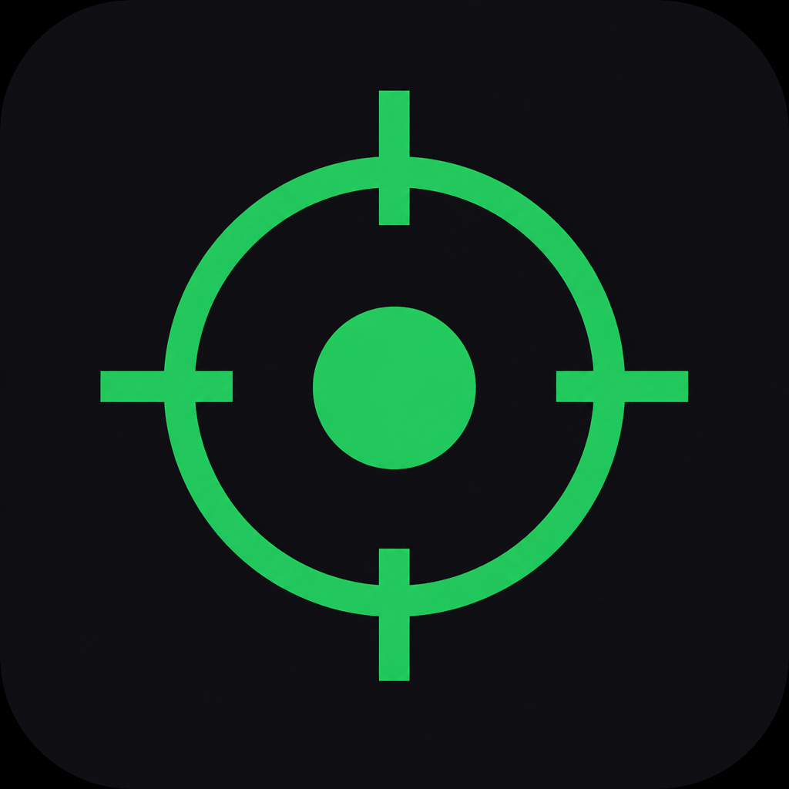

Windows
v1.4.1 · x64
Windows 10 / 11
ZIP archive with the exe and silent launcher.
Launch-Windows.vbs(recommended)LuLuneAutoClicker.exe- Windows 10 / 11 · x64
LuLune
Click faster, cleaner — on Windows, macOS, and Linux. Macros, Discord Rich Presence, stop zones, and themes.
Pick your system. Windows is ready; macOS and Linux need to be packaged on the target machine (native modules).
ZIP archive with the exe and silent launcher.
Launch-Windows.vbs (recommended)LuLuneAutoClicker.exe.app build to generate on a Mac. Gatekeeper handled via the included script.
Open-macOS.command removes quarantinenpm run package:mac or package:mac:arm64Electron binary + script. X11 session recommended for clicks.
./Launch-Linux.sh (chmod +x auto)npm run package:linux on LinuxMajor engine pass (v1.4.0) plus UI polish, Discord Presence, opacity, and shortcut stability (v1.4.1). Your personal stats stay in AppData — the ZIP is clean for your friends.
New slider in Appearance: lower the opacity of panels, the title bar, and the status bar so your background image really shows through. At 10% the UI becomes very translucent; at 100% it stays solid. Combines with panel blur and image visibility.
Bug fixed: themes were overriding the image palette and buttons kept hard-coded green. Now a gray photo colors the entire interface (Start, borders, toggles, glows). Colored image → accents from the photo. “Custom color” option with color wheel, hue, and hex to force a color.
In the app: Client ID only + “Open portal” / “Open logo file” buttons. The “Playing LuLuneAutoClicker” title and logo are set in the Discord Developer Portal (app name + Art Asset named exactly logo). Site link will be wired later. Status Idle / Clicking · live CPS.
While capturing a new key, F6 / Panic / Pause / macros are disabled (Esc cancels). More compact window only on the AutoClick view (mouse icon). Macros: 4-step tutorial + ▶ Play. Ctrl/Cmd hints per Windows, macOS, or Linux — no more mixed text.
CPS ramp (rise from X to Y over N seconds). Bursts (N clicks then pause). Pixel filter (only click if the color under the cursor matches). Failsafe if mouse is idle. Session timer. Confirmation before a CPS that is too high. Panic F12 / Pause F7.
Multiple full settings slots. Day / session goals. 4-corner overlay + opacity, hideable on pause. Minimal UI mode. FR/EN language. Sounds, auto-minimize on click start. Discord: LuLune0193.
Live CPS, overlay badge, Hold mode, drawable zones, process list, game presets (Minecraft PVP, Cookie Clicker…), import/export macros & presets, Green/Blue/Red/Light themes, background image, tutorial, built-in changelog. Windows · macOS · Linux.
Download your system's ZIP, unzip, then launch.
LuLuneAutoClicker-Windows.zipLaunch-Windows.vbs (recommended) or LuLuneAutoClicker.exeLuLuneAutoClicker-macOS.zipOpen-macOS.commandLuLuneAutoClicker-Linux.zipchmod +x Launch-Linux.sh and ./Launch-Linux.shmacOS and Linux builds must be generated on the target machine (native mouse / keyboard modules).
Discord Rich Presence, logo with capital letters, and launching on each OS.

To see LuLuneAutoClicker (with capital letters) and the green logo instead of “?”.
assets/discord-logo.png.logo (lowercase). Wait 1–2 min for Discord to propagate the image.Still lowercase? Rename the app in the Portal. Still “?”? The logo asset is not uploaded or is misnamed.
LuLuneAutoClicker-Windows.zip then unzipLaunch-Windows.vbs (no console) or LuLuneAutoClicker.exeLuLuneAutoClicker-macOS.zip then unzipOpen-macOS.commandLuLuneAutoClicker-Linux.zip then unzipchmod +x Launch-Linux.sh then ./Launch-Linux.shEverything you need to click seriously — without overkill.
libnut / nut-js engine, zero delays, high-precision timing.
Clicks, keys, delays, sequences. Multi-key shortcuts (Shift+F, Ctrl+1…).
Logo, capital letters, live CPS on your profile. Site link ready for later.
Same interface on Windows, macOS, and Linux — dedicated launchers included.